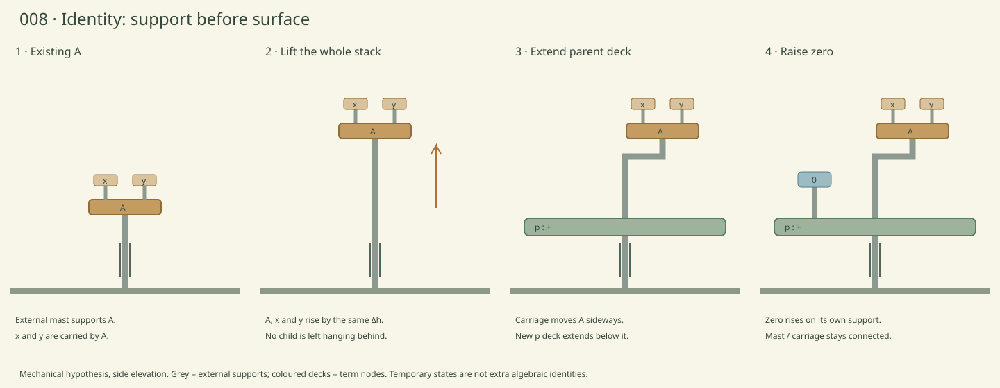

008 · Support before surface.
Parked variation — not the current art direction. The exposed pillar/clockwork look was too literal and manufactured. Future plateau work should lean closer to pure landforms. Plateau exploration is paused.
A separate notebook for plateaus. Begin with one identity and account for every carried object.

One concrete hypothesis
An external telescoping mast supports A. A and its children rise together to make room. A sliding carriage carries that whole stack to the right while a new parent deck extends underneath. Zero then rises from the parent deck on a smaller support. The original mast continues carrying the load throughout; it does not disappear during a support handoff.
| Object | What moves it |
|---|---|
| A and its descendants | Main lift and carriage; identical translation for the whole stack |
| New plus deck | Extension around the existing mast, beneath the lifted stack |
| Zero | Its own vertical support above the new deck |
The fixed mast is infrastructure, not a pre-existing plus. Grey supports remain distinct from coloured semantic decks. This mechanism allows nonconservation of material during deck growth; it does not explain where new stone comes from.
Landform / mechanism concept

Generated material interpretation of the final support arrangement. Use the SVG for precise correspondence. Roots bridging moving seams should stretch and break only at those seams; moss on a carried deck travels with it. Creaking, grit and root regrowth would communicate load and release, but none are implemented here.
Before attempting associativity again
We need to specify which deck carries each operand at every instant, where a temporary support can reach, and how load transfers before either plus changes role. Raising a sheet is insufficient if it leaves its children behind or intersects another load-bearing sheet. This notebook does not yet solve that transition.
Generation prompt and review